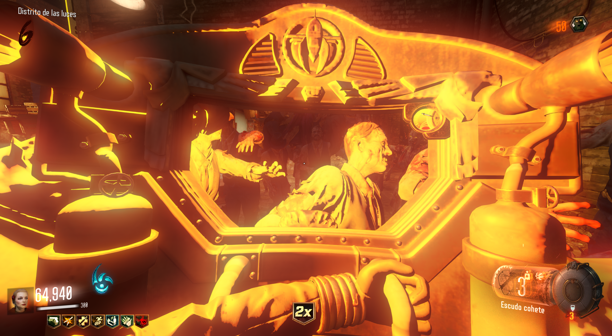
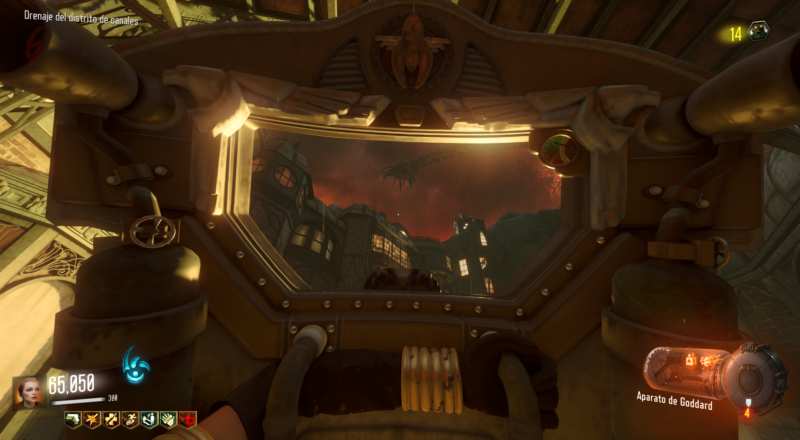

La mejora del escudo cohete, nos dará una carga más. (No es demasiado útil)
Matar: Deberemos de matar a 10 o más zombies de una sola carga con el escudo. Si lo hacemos bien sonará como si hicieramos un pleno en la bolera.

Este proceso habrá que hacerlo 12 veces hasta que suenen unos aplausos. En ese momento el escudo estará mejorado.
